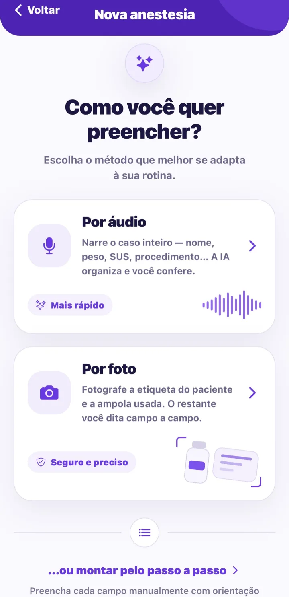
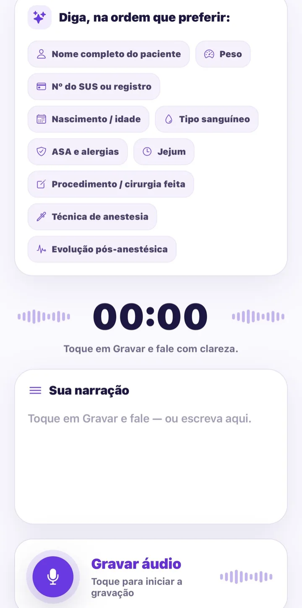
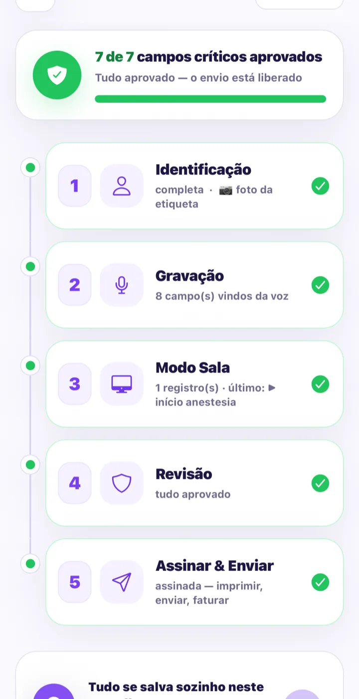
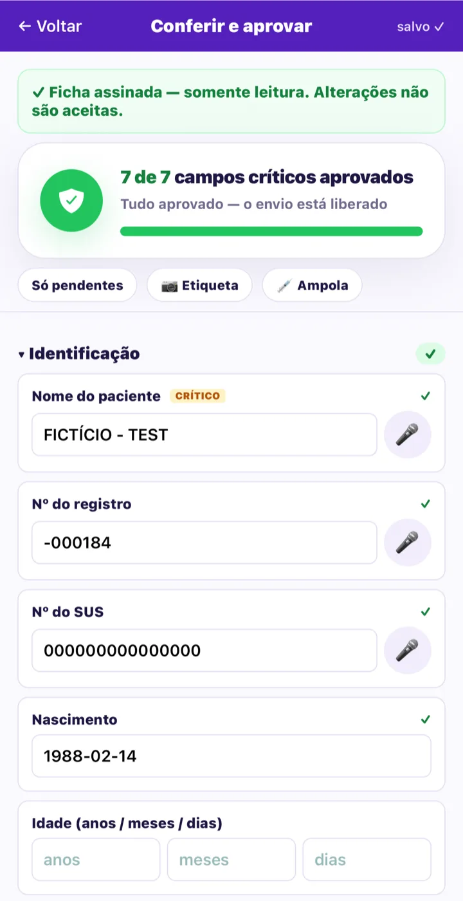
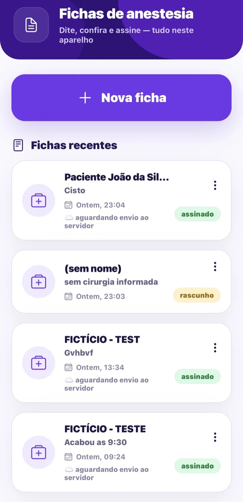
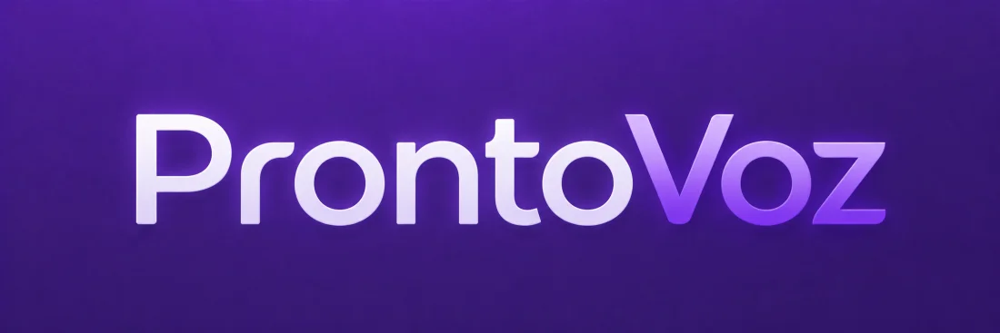

O caso acabou às 19h.
Você saiu às 20h40.
A hora que a papelada rouba não volta — e ela sai sempre da sua conta: do jantar, do trânsito mais leve, do seu descanso entre plantões.
A papelada é a única parte do seu plantão que dá para devolver. Você dita o caso — ou fotografa a etiqueta do paciente — e o ProntoVoz monta a ficha anestésica ou o relatório de cirurgia. Sobra para você só o que sempre foi seu: conferir campo a campo e assinar.
Próxima atualização: teste de 14 dias sem cadastrar cartão para contas elegíveis. Depois, assinatura individual pela App Store.

📱 Tela real do app — dados de paciente fictícios
A parte da medicina que ninguém aguenta mais não é a medicina. É o que vem depois dela.
A hora que a papelada rouba não volta — e ela sai sempre da sua conta: do jantar, do trânsito mais leve, do seu descanso entre plantões.
Anotar na prancheta durante o ato e redesenhar tudo depois é fazer o mesmo trabalho duas vezes — todos os dias, em todos os casos.
Campo em branco, letra que o auditor não leu, código que faltou: o convênio não paga o que não entende — e quem corre atrás é você.
Documentar de memória, horas depois, é um risco jurídico que você carrega sozinho. O registro completo, feito na hora, é a sua defesa.
O ProntoVoz não pede que você digite mais rápido — ele aposenta a digitação. O nome diz o método: PRONTuário + VOZ. Você narra o caso, e quando ele termina o documento cumpre a outra metade do nome: está pronto, esperando só a sua conferência.
E você dita quando dá — depois da indução, num momento estável ou logo ao fim do ato, antes de sair da sala. Os vitais entram por frases que você já fala em voz alta (“pressão doze por oito, pulso setenta e dois”); a narrativa pode esperar o fim do caso. Nada precisa ser dito na frente do paciente.
Quatro passos simples. Você escolhe o que entra no documento.
📱 Telas reais do app — os pacientes exibidos são fictícios

1Dite o caso como você já fala — na ordem que preferir. As perguntas-guia lembram os campos, o texto nunca se apaga, e o áudio não sai do aparelho.

2O app mostra os dados identificados para sua revisão. O que não foi registrado precisa ser preenchido por você.

3Confira e aprove, campo a campo. Campo crítico pendente bloqueia a assinatura — “7 de 7 aprovados” libera o envio. Errou? Corrija por voz, no 🎤 do campo.

4Assine com a biometria do iPhone e envie na hora: impressão no formato da ficha, faturamento, e-mail ou WhatsApp. E vá embora.
📱 Tela real · ProntoVoz Anestesia
A mesma ficha que você conhece do papel — avaliação pré-anestésica, ASA, técnica, monitorização — montada pela sua voz ou pela foto da etiqueta, com o intraoperatório em tempo real.
Imagem ilustrativa — o ProntoVoz Cirurgia segue o mesmo fluxo das telas reais acima
Terminou o ato, você narra: diagnóstico, procedimentos, equipe, descrição cirúrgica. O ProntoVoz estrutura tudo no formato do documento oficial.
Para médico, segurança não é seção de rodapé. É requisito de primeira linha. E aqui ela não é promessa de marketing: está escrita nas telas do próprio app.
O app remove a cópia temporária após a leitura. A foto original escolhida na galeria permanece na sua biblioteca.
O médico confere os dados antes de usá-los.Leitura local no iPhone · foto original preservada
O ProntoVoz é um produto brasileiro em acesso antecipado, do Grupo Pasdiora em parceria com a Ideal Assessoria Médica. Sem call center: os primeiros médicos falam direto com quem constrói, e o produto é moldado pelo que eles pedem. As telas desta página são do app real — não maquetes.
Nas próximas versões, médicos elegíveis poderão usar cada app por 14 dias sem cadastrar cartão. O teste começa no app, após criar a conta, e não inicia cobrança automática. Depois do prazo, a continuidade exige uma assinatura individual pela App Store.
Essa experiência chegará nas versões 1.1.6 (Anestesia) e 1.0.4 (Cirurgia), após aprovação da Apple. A versão atualmente disponível pode ter condições diferentes.
São dois apps, um por função. Escolha pelo documento que você assina: ficha anestésica → Anestesia · relatório do ato cirúrgico → Cirurgia.
Para anestesiologistas
Após o teste, assinatura individual pela App Store · preço e condições exibidos antes da compra
Ver Anestesia na App Store → O teste da próxima versão não pede cartão nem inicia uma assinatura automaticamente.Para cirurgiões
Após o teste, assinatura individual pela App Store · preço e condições exibidos antes da compra
Ver Cirurgia na App Store → O teste da próxima versão não pede cartão nem inicia uma assinatura automaticamente.Precisa dos dois documentos? Você pode baixar os dois apps; o acesso de cada um é individual.
É possível trabalhar em rascunhos no iPhone quando a conexão oscila. Para confirmar o acesso ao abrir o app, iniciar o teste, contratar uma assinatura e sincronizar, é necessária internet. O app mostra quando um documento ainda aguarda envio ao servidor.
Não. Dados identificados por voz, foto ou digitação precisam ser conferidos por você. Informações que faltarem devem ser completadas antes de finalizar o documento.
Você pode corrigir, rejeitar ou digitar novamente antes de finalizar. O app auxilia o registro; a conferência clínica e a decisão sobre o conteúdo continuam com o profissional.
Você revisa as informações identificadas e corrige apenas o que precisar. Os campos pendentes aparecem na tela para facilitar a conferência antes de finalizar.
Nas próximas versões, uma conta elegível poderá ativar 14 dias de teste no app sem cadastrar cartão. O teste não inicia uma assinatura nem uma cobrança automática. Para continuar após o prazo, você decide se quer contratar a assinatura individual pela App Store.
Para continuar usando o app após o teste, é necessário contratar uma assinatura mensal individual pela App Store. Sem ela, o acesso fica bloqueado. A App Store mostra o preço e as condições antes da confirmação; você pode gerenciar ou cancelar a assinatura nas configurações da sua Conta Apple.
Hoje o ProntoVoz é feito para iPhone — é nele que a transcrição roda dentro do aparelho, sem o áudio sair para a internet. A versão Android está no radar: peça seu acesso e conte qual aparelho você usa; isso ajuda a definir a fila.
Cada app corresponde ao documento da sua função: a ficha anestésica ou o relatório de cirurgia. Se o seu dia a dia pede os dois, baixe os dois apps; cada um tem acesso e assinatura individuais.
O PDF sai no formato da ficha que você conhece, com a grade estilo papel. Imprime na hora e anexa ao prontuário, como você sempre fez. O ProntoVoz não exige que o hospital mude nada — quem muda de vida é você.
O médico revisa o PDF antes de assinar. O app oferece assinatura eletrônica no aparelho, com biometria e registro de integridade do documento. A opção de assinatura qualificada ICP-Brasil é integrada à BRy e depende do CRM, de um certificado digital elegível e do cadastro do próprio médico no provedor. Valide com seu serviço as exigências para o documento.
O app não envia o áudio nem a cópia temporária da foto aos nossos servidores: a transcrição e a leitura da etiqueta acontecem no iPhone, e essa cópia é removida após a leitura. A foto original escolhida na galeria permanece na sua biblioteca e segue as configurações de backup do aparelho. Apenas texto segue para servidores próprios, no Brasil, sob LGPD — e a telemetria do app não carrega dado de paciente. Enviar um documento por e-mail ou WhatsApp é sempre uma ação sua, nunca automática.
Seus documentos assinados continuam no seu aparelho — são seus. Você pode exportá-los em PDF ou em formato estruturado antes de sair. Sem fidelidade, sem multa.

Seu próximo documento se escreve enquanto você trabalha.
Você só confere e assina — é assim que deve ser.